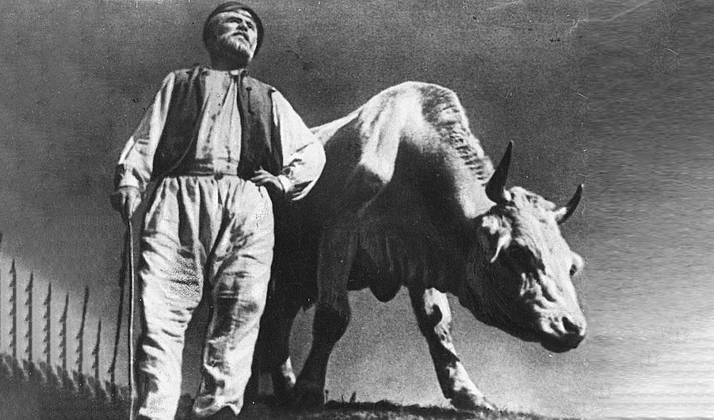
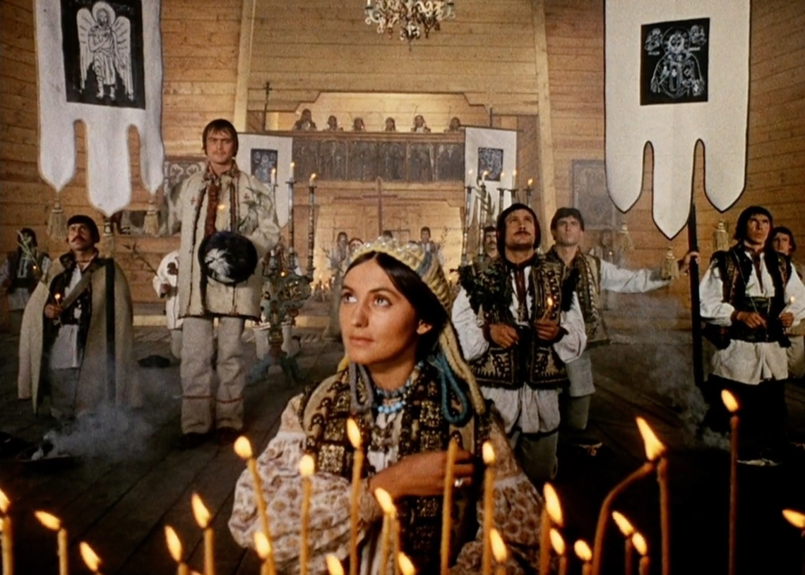
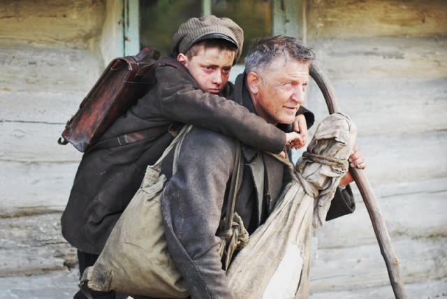
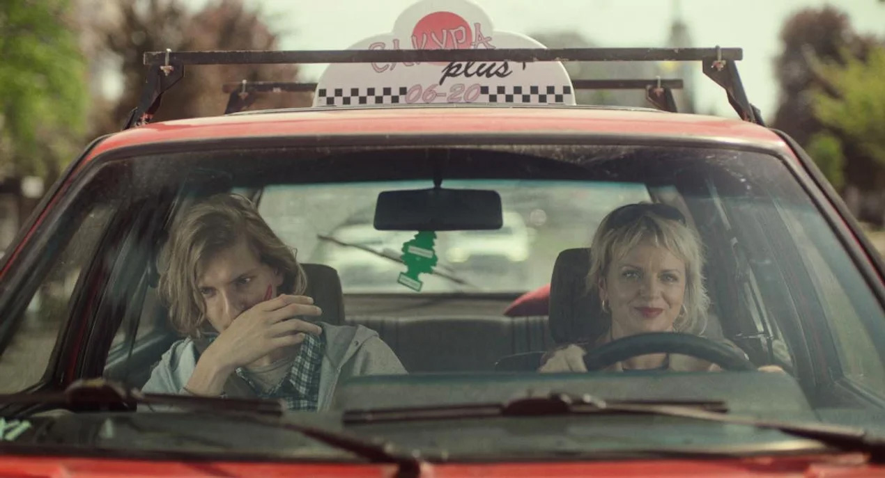
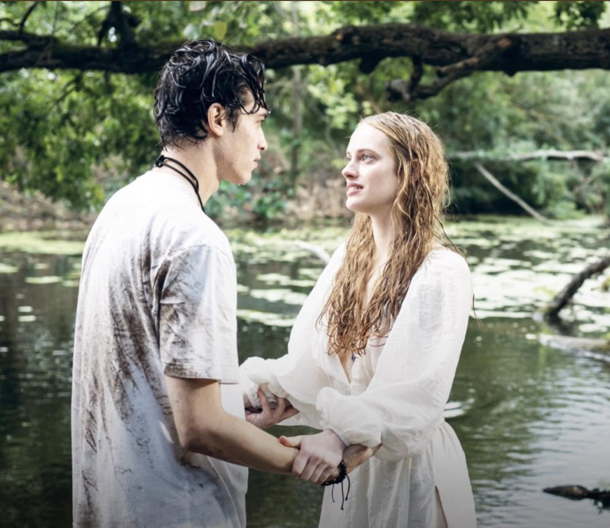
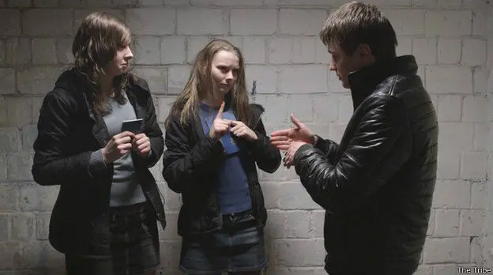
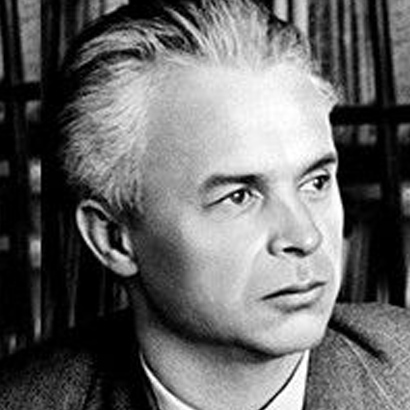
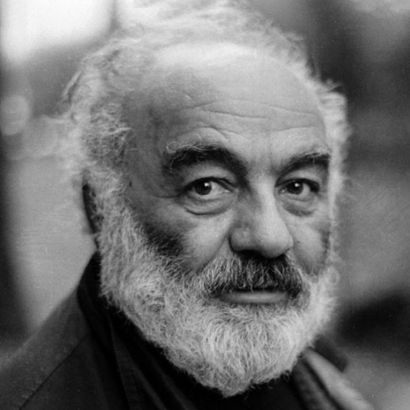

Земля
1930 рік
Філософська кінопоема Олександра Довженка про колективізацію, гармонію людини з природою та вічний цикл життя.
Детальніше →Українське кіно має багату та драматичну історію, що охоплює понад століття безперервних творчих пошуків. Ще на світанку кінематографа українські митці робили сміливі експерименти з монтажем, світлом та операторською роботою, закладаючи фундамент світової кіномови. Особливе місце в історії посідає українське поетичне кіно, яке поєднало глибокий фольклор, філософську символіку та неповторну візуальну естетику.
Попри десятиліття цензури та заборон, національний кінематограф зберіг свою самобутність. Сьогодні сучасні українські режисери створюють стрічки різних жанрів — від авторських драм і документалістики до масштабних історичних екшенів та анімації, здобуваючи престижні нагороди на провідних кінофестивалях у Каннах, Венеції та Берліні.
Винахідник Йосип Тимченко в Одесі сконструював перший кіноапарат і продемонстрував два фільми за два роки до братів Люм'єр.
Вихід німого шедевра Олександра Довженка «Земля», який увійшов до списку 12 найкращих фільмів усіх часів і народів.
Прем'єра фільму Сергія Параджанова «Тіні забутих предків», що започаткувала хвилю українського поетичного кіно.
Новий ренесанс українського кіно: світове визнання стрічок «Плем’я», «Мої думки тихі» та рекордний успіх анімації «Мавка. Лісова пісня».

1930 рік
Філософська кінопоема Олександра Довженка про колективізацію, гармонію людини з природою та вічний цикл життя.
Детальніше →
1965 рік
Культова стрічка Сергія Параджанова за повістю Михайла Коцюбинського про трагічне кохання гуцульських Ромео і Джульєтти.
Детальніше →
2014 рік
Історична драма Олеся Саніна про подорож американського хлопчика та сліпого кобзаря Україною 1930-х років.
Детальніше →
2019 рік
Трагікомедія Антоніо Лукіча про молодого звукорежисера, який вирушає на Закарпаття записувати голоси рідкісних тварин.
Детальніше →
2023 рік
Український романтичний фільм-фентезі,де події відбуваються в сучасній Україні та спираються на мотиви української міфології і демонології.
Детальніше →
2014 рік
Кримінальна драма Мирослава Слабошпицького, знята виключно жестовою мовою без субтитрів та закадрового голосу.
Детальніше →
Класик світового кінематографа, кінорежисер і письменник. Його новаторський підхід до монтажу та поетичного зображення природи вплинув на розвиток світового кіно. Відомі роботи: «Звенигора» (1928) та «Земля» (1930).

Видатний кінорежисер і художник, засновник українського поетичного кіно, чий унікальний візуальний стиль захоплював Федеріко Фелліні та Жан-Люка Годара. Відомі фільми: «Тіні забутих предків» (1965) та «Колір граната» (1969).
Один із найяскравіших представників нової хвилі українського кіно, майстер тонкої іронії та трагікомедії, лауреат фестивалю в Карлових Варах. Відомі фільми: «Мої думки тихі» (2019) та «Люксембург, Люксембург» (2022).
Ця стрічка вражає своєю щирістю, живими діалогами та впізнаваним гумором. Історія про пошук порозуміння між сином і матір'ю на тлі мальовничих краєвидів Закарпаття залишає теплий післясмак і змушує по-новому подивитися на буденні речі.